Molly and Shaina Comics
The Great Snack Mystery
Molly and Shaina investigate a suspicious trail of crumbs, discover the evidence, and reach the only fair conclusion: everyone was innocent.
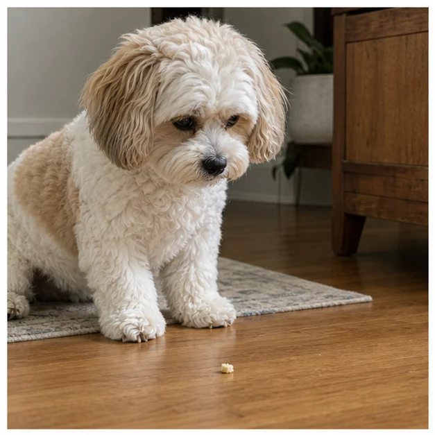
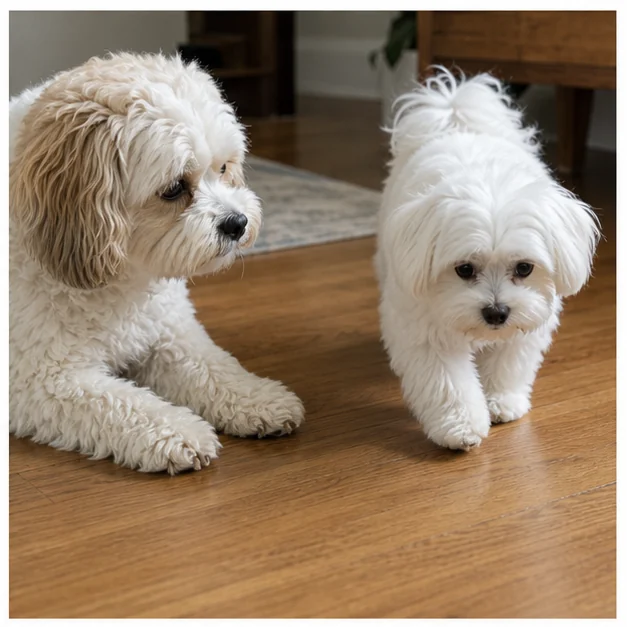
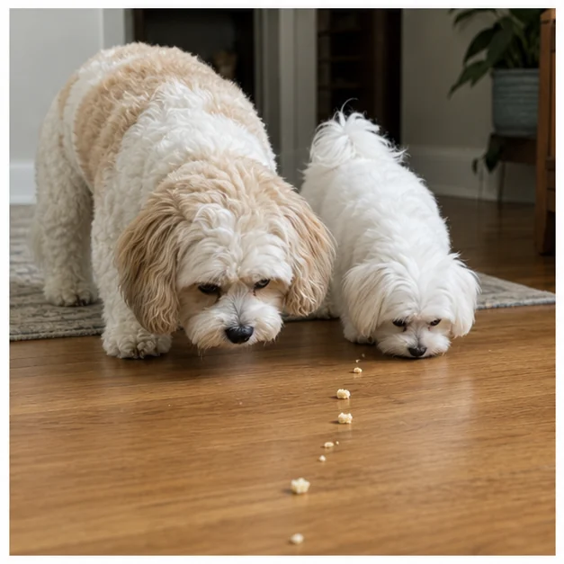
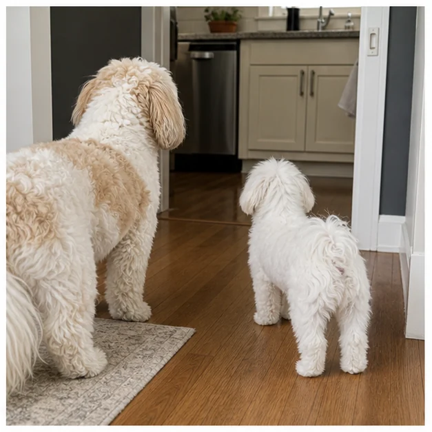
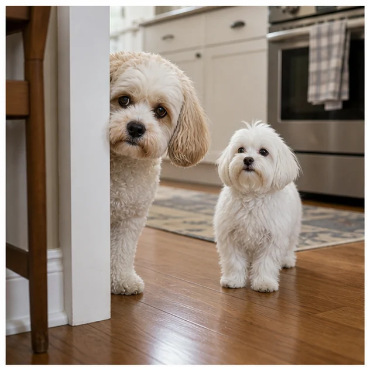
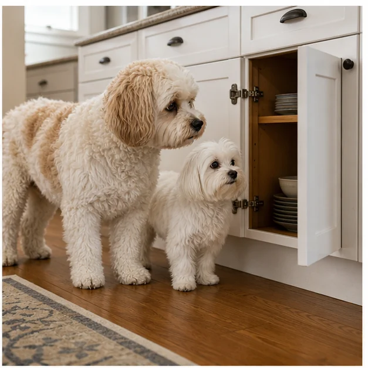
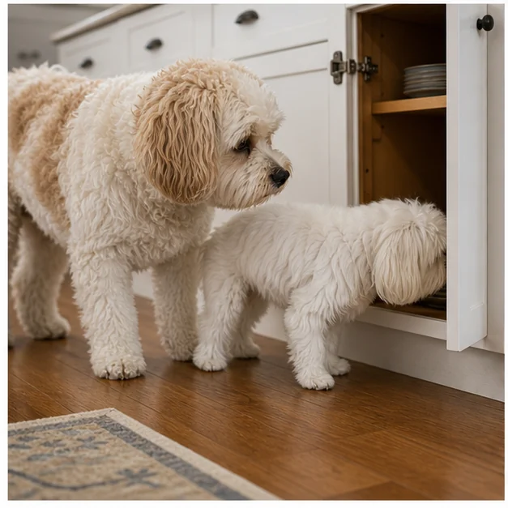
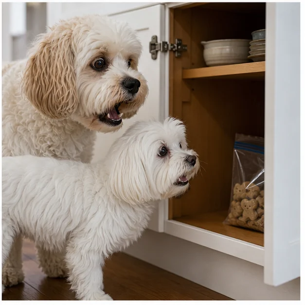
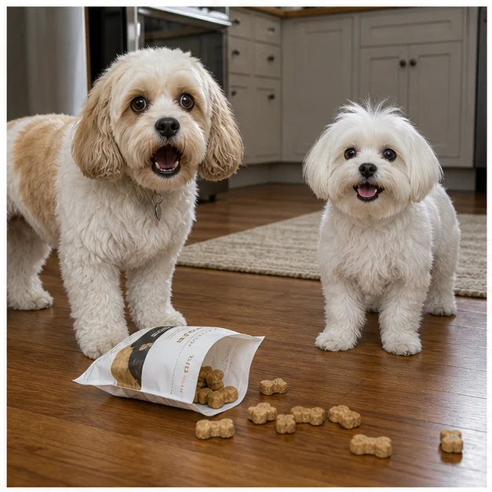
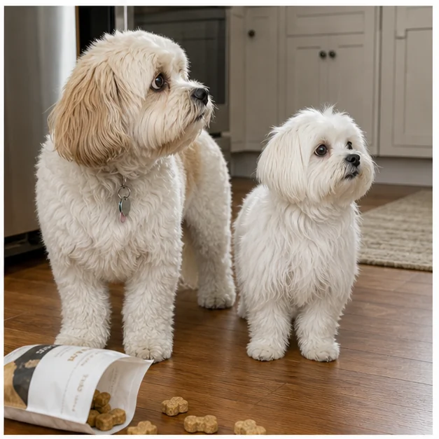
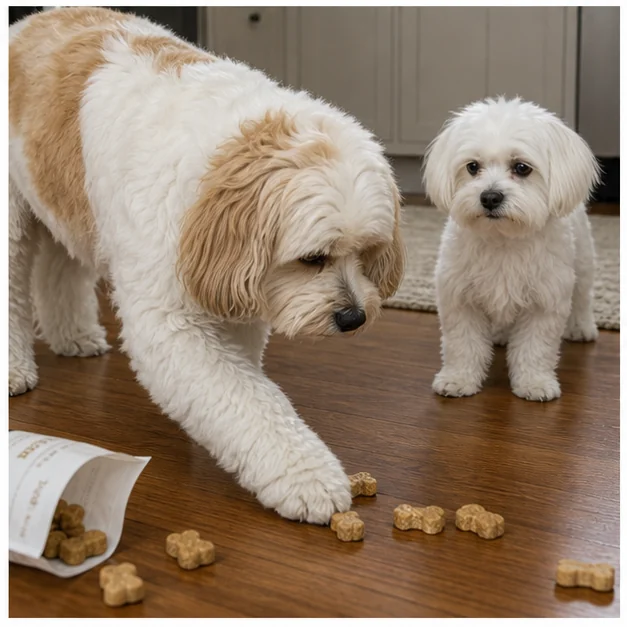
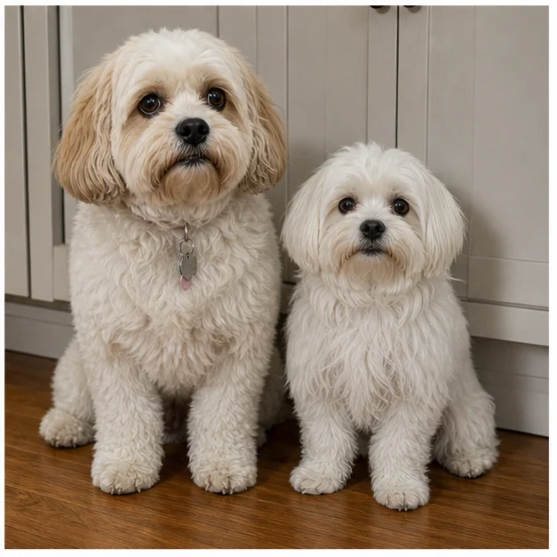
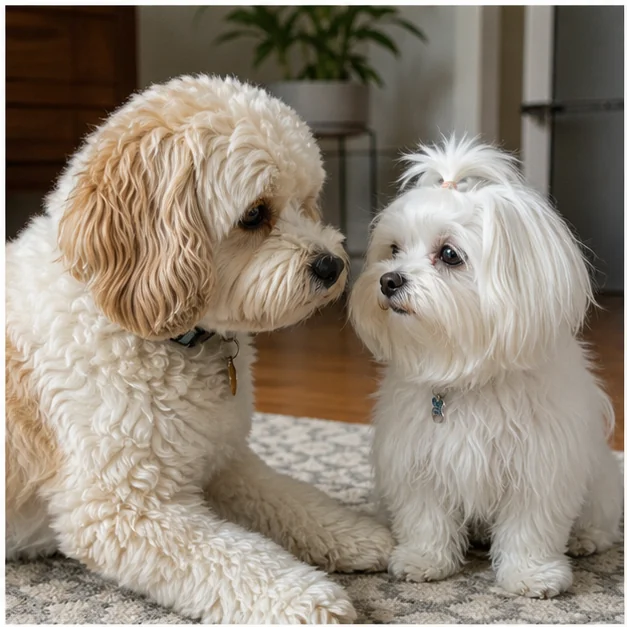
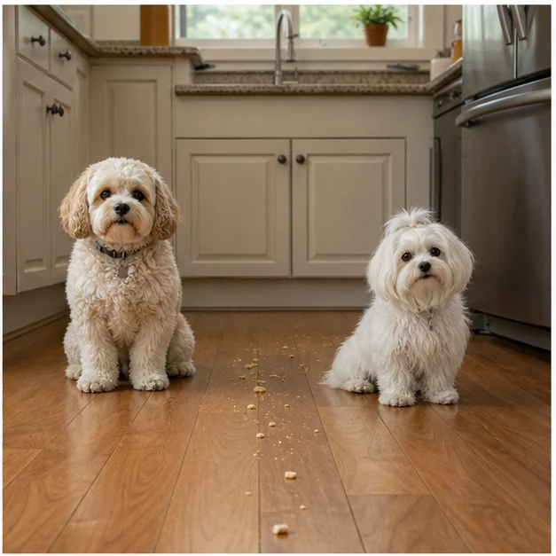
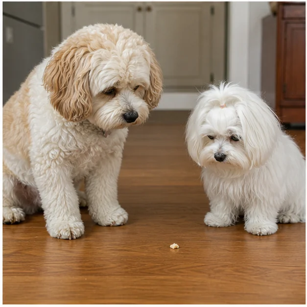
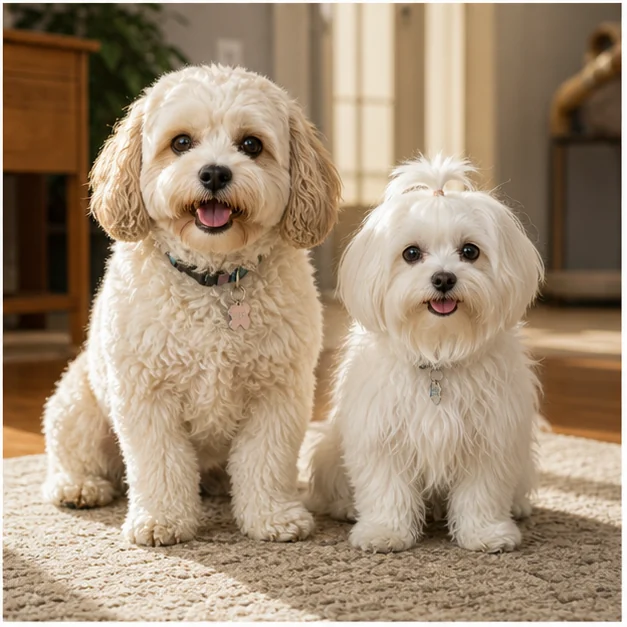